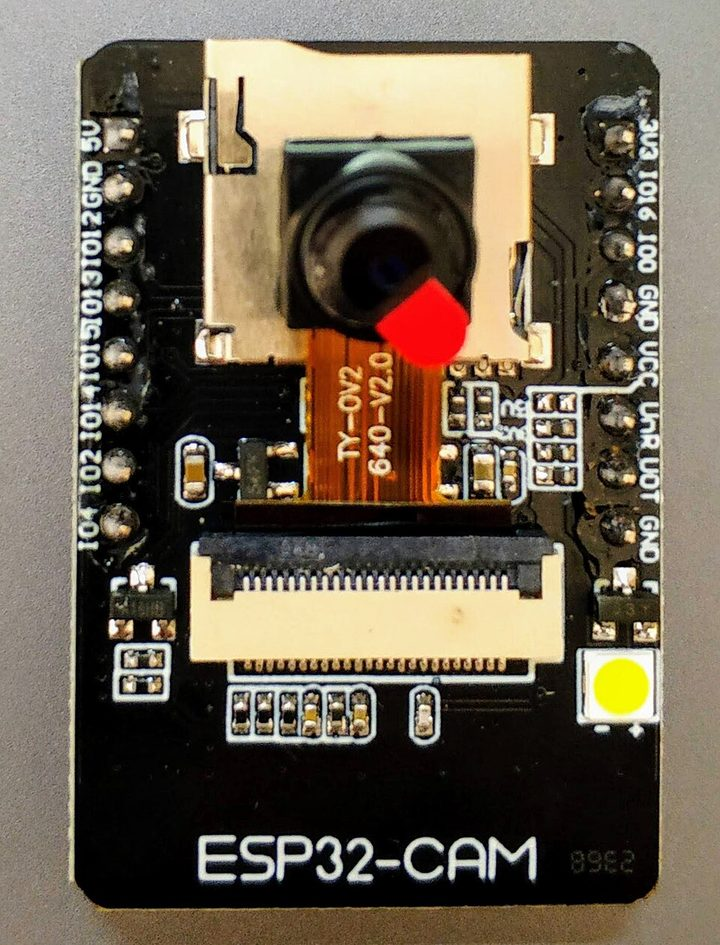

Capítulo 1 · El ojo
Ver no es lo mismo que entender
La luz entra por la pupila, atraviesa el cristalino y llega a la retina, una capa de células al fondo del ojo. Ahí millones de sensores convierten la luz en señales eléctricas que viajan por el nervio óptico hasta el cerebro. El ojo capta; el cerebro interpreta. Reconocer una taza, una cara o una puerta abierta ocurre en el cerebro, no en el ojo.
Ese último dato sorprende: solo vemos con nitidez un punto del tamaño de una uña con el brazo estirado. El cerebro mueve los ojos sin parar y arma la imagen completa. Lo vas a probar más abajo.
Capítulo 2 · El chip
Un microcontrolador del tamaño de una estampilla
El ESP32 es un microcontrolador: un chip que junta un procesador, memoria y periféricos (WiFi, Bluetooth, pines de entrada y salida) para controlar algo del mundo físico: prender una luz, leer un sensor, sacar una foto. No es una computadora. No tiene sistema operativo ni corre varios programas a la vez: ejecuta un solo programa, el que le cargues, desde que se enciende hasta que se apaga. Es el tipo de chip que hay adentro de un enchufe inteligente, un sensor de riego o un timbre con cámara.
| Una computadora | Un microcontrolador (ESP32) | |
|---|---|---|
| Programas | Muchos a la vez, con sistema operativo | Uno solo, sin sistema operativo |
| Memoria | Miles de millones de bytes (GB) | 520 KB (+ 4 MB de PSRAM en la ESP32-CAM) |
| Contacto con el mundo | Teclado, pantalla, mouse | Pines que prenden, apagan y miden |
| Consumo | Decenas de vatios | Alrededor de un vatio |
| Precio | Cientos de dólares | Pocos dólares |
- 2008Nace Espressif Systems en Shanghái, una empresa de chips.
- 2014Su chip ESP8266 se vuelve famoso entre aficionados: WiFi por unos pocos dólares. Cualquiera puede conectar un aparato a internet.
- 2016Llega el ESP32: dos núcleos, WiFi y Bluetooth. Se convierte en uno de los chips más usados para proyectos de internet de las cosas (IoT).
- DespuésEl fabricante AI-Thinker le pega una cámara: la ESP32-CAM, la placa de este curso.
Capítulo 3 · La cámara
La ESP32-CAM, por dentro
Una ESP32-CAM real, de frente. Tocá los puntos, o los nombres, para ver qué hace cada parte.

De este lado:
Del otro lado de la placa (no se ven en la foto):
Capítulo 4 · Tres maneras de mirar
La misma escena, vista por un ojo, un sensor y un agente
Pasá el puntero (o el dedo) sobre la imagen en cada modo.
Capítulo 5 · La pregunta define al agente
Una cámara, muchos trabajos
Un agente es un programa que percibe algo del mundo, razona y responde o actúa. En la lección 05 la ESP32-CAM saca una foto y se la manda a Gemini, la IA de Google, junto con una pregunta. El hardware es el mismo; lo que cambia su trabajo es lo que le preguntás.
Lo que pasa en esos segundos
El total se midió con una ESP32-CAM real y señal WiFi débil, el 25 de septiembre de 2026. El reparto entre los pasos es aproximado.
La pregunta
¿Es un dispositivo de internet de las cosas, o es la mirada de un agente?
Un sensor de temperatura mide un número. Esta cámara, en cambio, le da a un modelo de IA la capacidad de ver y opinar sobre lo que ve: describe, cuenta, compara, avisa. Cuesta menos que un almuerzo y cabe en la palma de la mano. El chip no entiende nada; el que entiende está del otro lado del cable. Pero sin esos ojos, el agente no sabría que la puerta quedó abierta.
- ¿Quién decide qué se mira? La cámara ve todo lo que tiene enfrente, incluida la pantalla de alguien. ¿Dónde está el límite?
- ¿Cuánto confiarías en lo que dice? El agente puede equivocarse con confianza. ¿Qué decisiones le dejarías tomar solo?
- ¿Qué agente construirías vos? Con la misma placa y otra pregunta: ¿qué problema de tu casa, tu trabajo o tu comunidad resolvería?
Este texto es la introducción del curso Aprendiendo ESP32: cinco lecciones, desde prender una luz hasta la lección 05, "Ojos de un agente".